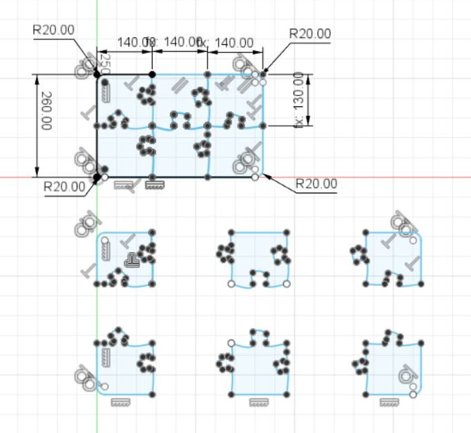
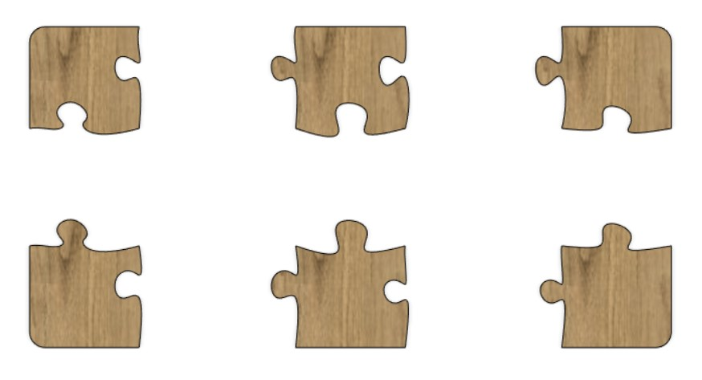
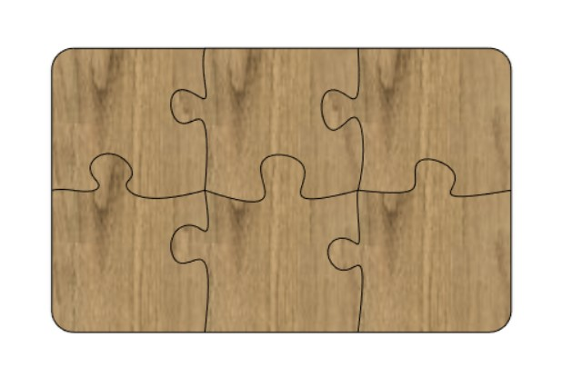

The project consists of designing, drawing, preparing and milling a large object. This project is a group project, the group consists of three people. Me, Davíð Rúnar and Elísa Ósk. My contribution to the project was the design and drawing of the board. Here below the documentation of my contribution can be seen.
For this project I decided to use Fusion 360 I have previous experience with Fusion as well as Inventor, Autocad and Solidworks. I decided to use Fusion due to my previous success with the software earlier in this course.
Fusion 360 is a cloud-based CAD/CAM tool for collaborative product development. Fusion 360 enables exploration and iteration on product ideas and collaboration within distributed product development team.
Fusion 360
The group decided to make a large cutting board shaped lika a puzzle. So the board consists of multiple puzzle pieces. This design was inspired by a picture found online. The picture can be seen here.
My contribution to the project was the design and drawing of the board. I decided to design a rather large board, 420x260mm. Because of the size of the cutting board the group can manifacture 2 boards and every member of the group can own one. I decided that each puzzle piece should be unique. By using spline the connections are unique and look nice
I started by drawing the whole board and dividing it into 6 puzzle pieces that ara the same length and height. Then I copied the puzzle pieces and moved them to be able to create separate bodies for every piece.

Then each pizzle piece is extruded.


Before going to Fablab to manifacture the cutting board I watched all of the safety instruction videos provided by the course instructor. All group members partook in the manifacturing of the cutting board. When we arrived at Fablab we were offered 18mm "krossviður" that looked very nice for this project.
The file used for laser cutting can be found here.
The assembly of the dog bowl stand can be found here.
Design a large object to CNC mill
Tools
How to access tools
Design
Production
Result
Workload
Part
Time
Choosing a project and team responsibility
2 hour
Measurements and determining design parmeters
1 hours
Drawing
3 hours
Watching safety videos
1 hours
Production (for the individual and group project)
3 hours
Hand finish product
3 hours
Updating website
............... hours
Total
22 hour
Files
Search engine keywords
HTML5 how to create table, Pressfit design, hundaskálar, HTML5 link files, html5 w3schools
{kind=link}